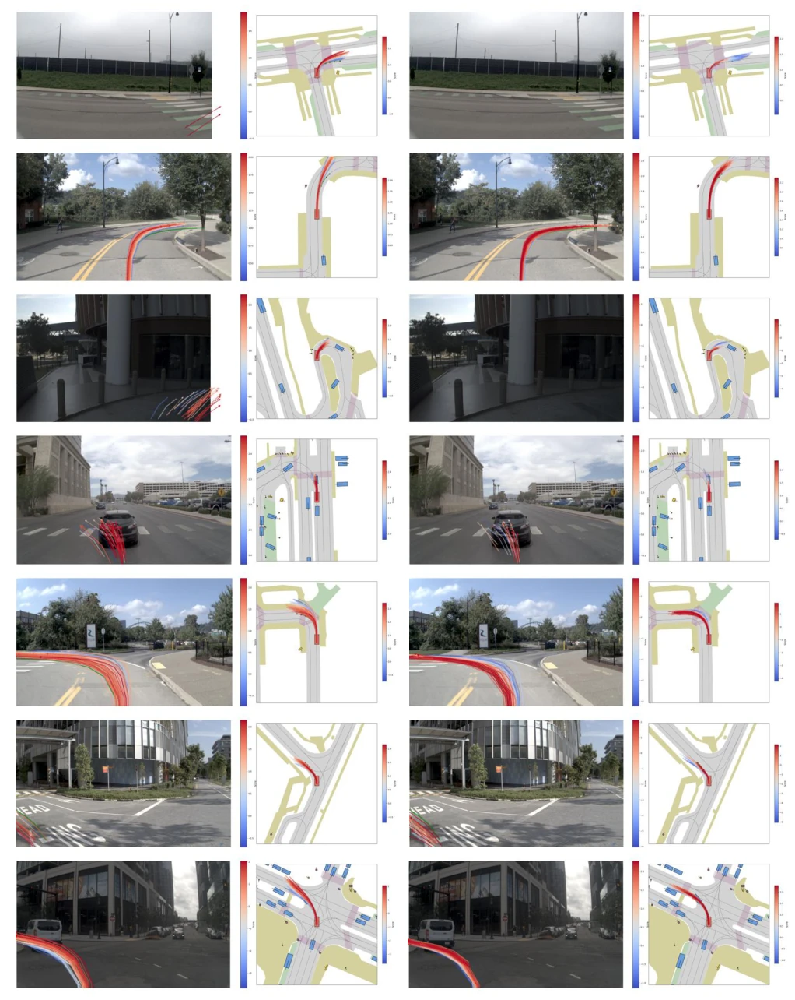
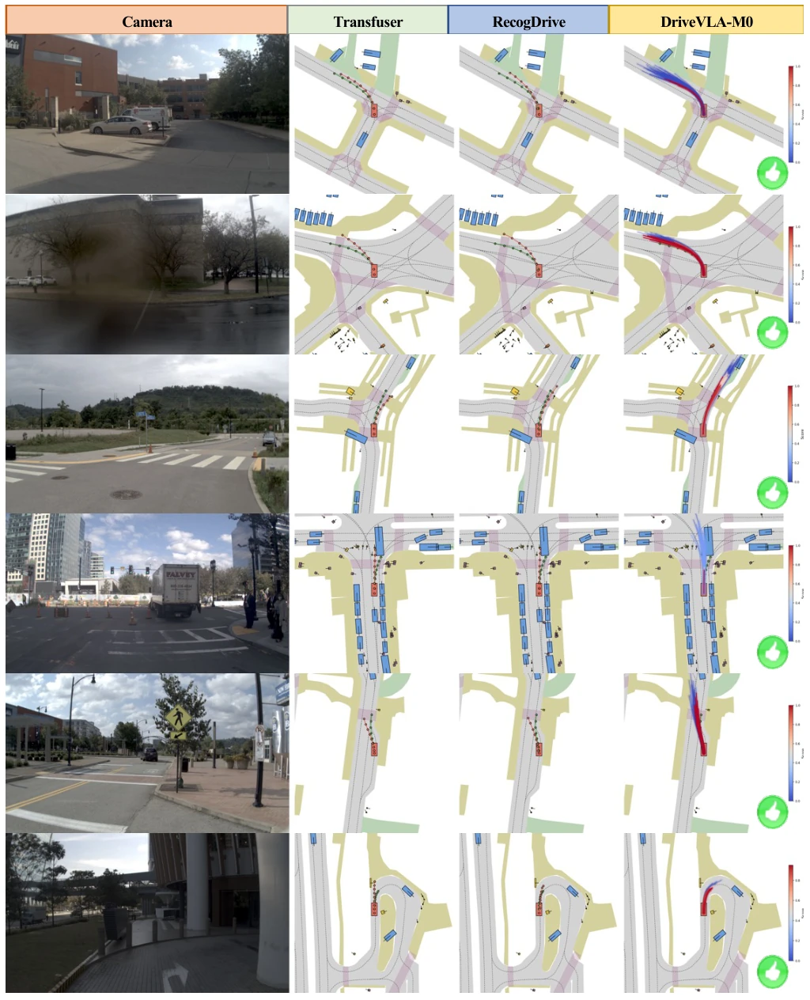
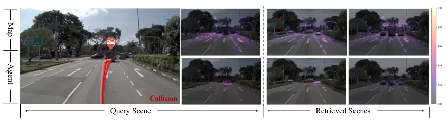
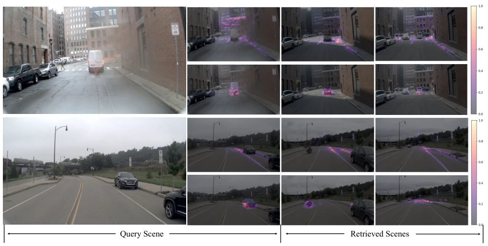

Figure 1: We propose DriveVLA-M0, a failure-aware memory augmentation VLA framework. (a) Classic VLA: VLMs perform scene reasoning in vision-language space and pass intermediate features to an Action Decoder for planning. The red trajectories indicate the model’s likely selections. (b) Ours: We retrieve structurally similar failure cases using Retrieved Model from a latent memory pool and inject them into the Action Decoder via LoRA-based test-time training for scenario-specific correction. (c) Performance: DriveVLA-M0 achieves SOTA on Navtest (NAVSIMv1, blue) and Navhard (NAVSIMv2, orange).
Figure 2: Overview of DriveVLA-M0. (Top) [M] Memory Generation: Scenarios where the base model underperforms are identified via oracle simulation scoring, and their intermediate features are stored in latent memory M. (Bottom) [I] Inference with TTT: At test time, structurally similar cases are retrieved from M based on the current scene features, and the retrieved contents are used to fine-tune the Action Decoder via Decoupled LoRA. Specifically, cases retrieved by map features are utilized to adapt the Map (Static) LoRA branch, while cases retrieved by agent features are used to adapt the Agent (Dynamic) LoRA branch, enabling targeted and scenario-specific planning correction.

Figure 6: Comparison of trajectory clusters before and after memory injection. In each pair, the left shows trajectories generated by the base model, and the right shows trajectories after injection.
Figure 4: Visualization of trajectories distribution before (top) and after (bottom) TTT injection. Red trajectories indicate those the model is more likely to select, while green trajectories represent the human trajectory. The accompanying distribution plot shows the GT score density of the trajectory cluster, where a rightward shift corresponds to higher overall cluster quality.

Figure 7: Trajectory comparison with prior methods. We select Transfuser as a representative end-to-end method and RecogDrive as a representative VLM-based method, and compare their generated trajectories with ours.
其他图片Other Figures

Figure 3: Attention maps of query and retrieved scenes. Top: map embedding; Bottom: agent embedding. Yellow indicates higher attention, and gray-purple indicates lower attention.

Figure 8: Attention maps of query and retrieved scenes. In each group, the top row shows the map embedding attention and the bottom row shows the agent embedding attention. Yellow indicates higher attention, and gray-purple indicates lower attention.